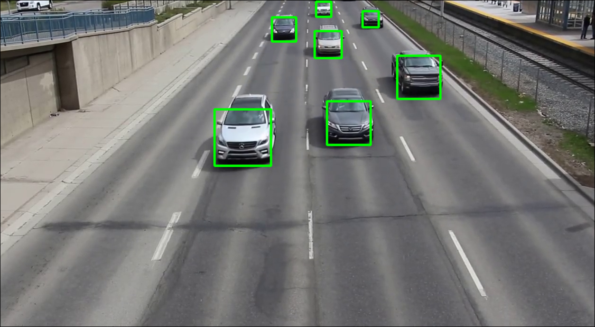

Our Project
In our project we have tried to reduce the waiting time in a simple 'plus' junction with no turning left or right.
To achieve that goal we have two main parts in our solution:
The first one is collecting the data to process.
The second is processing the data and deciding how to manage the traffic.
Collecting the Data
To collect the data we use a camera that shoots the junction and sends a video every 10 seconds. We process the videos using machine learning algorithm and compute the number of cars coming into every lane.
Process the Data - Traffic Management Algorithm
Given the number of cars coming from every lane we created an algorithm that decides which light will be green in the next period. Since there are no turns at any given time two traffic lights can be green at the same time - South to North and North to South, East to West and West to East.
(graphing example of how the algorithm works appears at the bottom of this page)
We have made some research and found a real life application operating in Hong Kong that works similarly to what we have done. To learn more about this project you can look at the following link click here.
Grafic example of the algorithm
At first the crossroad is empty.

The traffic management algorithm works in 3 phases - add, switch and redact.
First stage - Add: cars are entering the crossroad. It is identified and analyzed in the stage of video processing.

Second stage - Redact: cars are passing the crossroad according to poisson distribution.

Third stage - Switch: a loss function is computed according to the current number of cars in each lane and the two directions with the lowest loss are switched to green.

And it repeats this way.